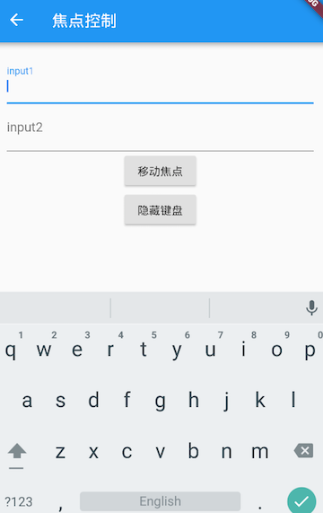
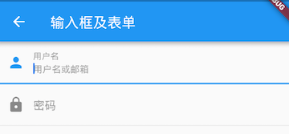

3.7 输入框及表单¶
Material组件库中提供了输入框组件TextField和表单组件Form。下面我们分别介绍一下。
3.7.1 TextField¶
TextField用于文本输入，它提供了很多属性，我们先简单介绍一下主要属性的作用，然后通过几个示例来演示一下关键属性的用法。
const TextField({
...
TextEditingController controller,
FocusNode focusNode,
InputDecoration decoration = const InputDecoration(),
TextInputType keyboardType,
TextInputAction textInputAction,
TextStyle style,
TextAlign textAlign = TextAlign.start,
bool autofocus = false,
bool obscureText = false,
int maxLines = 1,
int maxLength,
bool maxLengthEnforced = true,
ValueChanged<String> onChanged,
VoidCallback onEditingComplete,
ValueChanged<String> onSubmitted,
List<TextInputFormatter> inputFormatters,
bool enabled,
this.cursorWidth = 2.0,
this.cursorRadius,
this.cursorColor,
...
})
controller：编辑框的控制器，通过它可以设置/获取编辑框的内容、选择编辑内容、监听编辑文本改变事件。大多数情况下我们都需要显式提供一个controller来与文本框交互。如果没有提供controller，则TextField内部会自动创建一个。focusNode：用于控制TextField是否占有当前键盘的输入焦点。它是我们和键盘交互的一个句柄（handle）。InputDecoration：用于控制TextField的外观显示，如提示文本、背景颜色、边框等。keyboardType：用于设置该输入框默认的键盘输入类型，取值如下：| TextInputType枚举值 | 含义 | | ——————- | ————————————————— | | text | 文本输入键盘 | | multiline | 多行文本，需和maxLines配合使用(设为null或大于1) | | number | 数字；会弹出数字键盘 | | phone | 优化后的电话号码输入键盘；会弹出数字键盘并显示“* #” | | datetime | 优化后的日期输入键盘；Android上会显示“: -” | | emailAddress | 优化后的电子邮件地址；会显示“@ .” | | url | 优化后的url输入键盘； 会显示“/ .” |
textInputAction：键盘动作按钮图标(即回车键位图标)，它是一个枚举值，有多个可选值，全部的取值列表读者可以查看API文档，下面是当值为TextInputAction.search时，原生Android系统下键盘样式如图3-24所示：
style：正在编辑的文本样式。textAlign: 输入框内编辑文本在水平方向的对齐方式。autofocus: 是否自动获取焦点。obscureText：是否隐藏正在编辑的文本，如用于输入密码的场景等，文本内容会用“•”替换。maxLines：输入框的最大行数，默认为1；如果为null，则无行数限制。maxLength和maxLengthEnforced：maxLength代表输入框文本的最大长度，设置后输入框右下角会显示输入的文本计数。maxLengthEnforced决定当输入文本长度超过maxLength时是否阻止输入，为true时会阻止输入，为false时不会阻止输入但输入框会变红。onChange：输入框内容改变时的回调函数；注：内容改变事件也可以通过controller来监听。onEditingComplete和onSubmitted：这两个回调都是在输入框输入完成时触发，比如按了键盘的完成键（对号图标）或搜索键（🔍图标）。不同的是两个回调签名不同，onSubmitted回调是ValueChanged<String>类型，它接收当前输入内容做为参数，而onEditingComplete不接收参数。inputFormatters：用于指定输入格式；当用户输入内容改变时，会根据指定的格式来校验。enable：如果为false，则输入框会被禁用，禁用状态不接收输入和事件，同时显示禁用态样式（在其decoration中定义）。cursorWidth、cursorRadius和cursorColor：这三个属性是用于自定义输入框光标宽度、圆角和颜色的。
示例：登录输入框¶
布局¶
Column(
children: <Widget>[
TextField(
autofocus: true,
decoration: InputDecoration(
labelText: "用户名",
hintText: "用户名或邮箱",
prefixIcon: Icon(Icons.person)
),
),
TextField(
decoration: InputDecoration(
labelText: "密码",
hintText: "您的登录密码",
prefixIcon: Icon(Icons.lock)
),
obscureText: true,
),
],
);
运行后，效果如图3-25所示：

获取输入内容¶
获取输入内容有两种方式：
定义两个变量，用于保存用户名和密码，然后在
onChange触发时，各自保存一下输入内容。通过
controller直接获取。
第一种方式比较简单，不在举例，我们来重点看一下第二种方式，我们以用户名输入框举例：
定义一个controller：
//定义一个controller
TextEditingController _unameController = TextEditingController();
然后设置输入框controller：
TextField(
autofocus: true,
controller: _unameController, //设置controller
...
)
通过controller获取输入框内容
print(_unameController.text)
监听文本变化¶
监听文本变化也有两种方式：
设置
onChange回调，如：TextField( autofocus: true, onChanged: (v) { print("onChange: $v"); } )
通过
controller监听，如：@override void initState() { //监听输入改变 _unameController.addListener((){ print(_unameController.text); }); }
两种方式相比，onChanged是专门用于监听文本变化，而controller的功能却多一些，除了能监听文本变化外，它还可以设置默认值、选择文本，下面我们看一个例子：
创建一个controller:
TextEditingController _selectionController = TextEditingController();
设置默认值，并从第三个字符开始选中后面的字符
_selectionController.text="hello world!";
_selectionController.selection=TextSelection(
baseOffset: 2,
extentOffset: _selectionController.text.length
);
设置controller:
TextField(
controller: _selectionController,
)
运行效果如图3-26所示：

控制焦点¶
焦点可以通过FocusNode和FocusScopeNode来控制，默认情况下，焦点由FocusScope来管理，它代表焦点控制范围，可以在这个范围内可以通过FocusScopeNode在输入框之间移动焦点、设置默认焦点等。我们可以通过FocusScope.of(context) 来获取Widget树中默认的FocusScopeNode。下面看一个示例，在此示例中创建两个TextField，第一个自动获取焦点，然后创建两个按钮：
点击第一个按钮可以将焦点从第一个
TextField挪到第二个TextField。点击第二个按钮可以关闭键盘。
我们要实现的效果如图3-27所示：

代码如下：
class FocusTestRoute extends StatefulWidget {
@override
_FocusTestRouteState createState() => new _FocusTestRouteState();
}
class _FocusTestRouteState extends State<FocusTestRoute> {
FocusNode focusNode1 = new FocusNode();
FocusNode focusNode2 = new FocusNode();
FocusScopeNode focusScopeNode;
@override
Widget build(BuildContext context) {
return Padding(
padding: EdgeInsets.all(16.0),
child: Column(
children: <Widget>[
TextField(
autofocus: true,
focusNode: focusNode1,//关联focusNode1
decoration: InputDecoration(
labelText: "input1"
),
),
TextField(
focusNode: focusNode2,//关联focusNode2
decoration: InputDecoration(
labelText: "input2"
),
),
Builder(builder: (ctx) {
return Column(
children: <Widget>[
RaisedButton(
child: Text("移动焦点"),
onPressed: () {
//将焦点从第一个TextField移到第二个TextField
// 这是一种写法 FocusScope.of(context).requestFocus(focusNode2);
// 这是第二种写法
if(null == focusScopeNode){
focusScopeNode = FocusScope.of(context);
}
focusScopeNode.requestFocus(focusNode2);
},
),
RaisedButton(
child: Text("隐藏键盘"),
onPressed: () {
// 当所有编辑框都失去焦点时键盘就会收起
focusNode1.unfocus();
focusNode2.unfocus();
},
),
],
);
},
),
],
),
);
}
}
FocusNode和FocusScopeNode还有一些其它的方法，详情可以查看API文档。
监听焦点状态改变事件¶
FocusNode继承自ChangeNotifier，通过FocusNode可以监听焦点的改变事件，如：
...
// 创建 focusNode
FocusNode focusNode = new FocusNode();
...
// focusNode绑定输入框
TextField(focusNode: focusNode);
...
// 监听焦点变化
focusNode.addListener((){
print(focusNode.hasFocus);
});
获得焦点时focusNode.hasFocus值为true，失去焦点时为false。
自定义样式¶
虽然我们可以通过decoration属性来定义输入框样式，下面以自定义输入框下划线颜色为例来介绍一下：
TextField(
decoration: InputDecoration(
labelText: "请输入用户名",
prefixIcon: Icon(Icons.person),
// 未获得焦点下划线设为灰色
enabledBorder: UnderlineInputBorder(
borderSide: BorderSide(color: Colors.grey),
),
//获得焦点下划线设为蓝色
focusedBorder: UnderlineInputBorder(
borderSide: BorderSide(color: Colors.blue),
),
),
),
上面代码我们直接通过InputDecoration的enabledBorder和focusedBorder来分别设置了输入框在未获取焦点和获得焦点后的下划线颜色。另外，我们也可以通过主题来自定义输入框的样式，下面我们探索一下如何在不使用enabledBorder和focusedBorder的情况下来自定义下滑线颜色。
由于TextField在绘制下划线时使用的颜色是主题色里面的hintColor，但提示文本颜色也是用的hintColor， 如果我们直接修改hintColor，那么下划线和提示文本的颜色都会变。值得高兴的是decoration中可以设置hintStyle，它可以覆盖hintColor，并且主题中可以通过inputDecorationTheme来设置输入框默认的decoration。所以我们可以通过主题来自定义，代码如下：
Theme(
data: Theme.of(context).copyWith(
hintColor: Colors.grey[200], //定义下划线颜色
inputDecorationTheme: InputDecorationTheme(
labelStyle: TextStyle(color: Colors.grey),//定义label字体样式
hintStyle: TextStyle(color: Colors.grey, fontSize: 14.0)//定义提示文本样式
)
),
child: Column(
children: <Widget>[
TextField(
decoration: InputDecoration(
labelText: "用户名",
hintText: "用户名或邮箱",
prefixIcon: Icon(Icons.person)
),
),
TextField(
decoration: InputDecoration(
prefixIcon: Icon(Icons.lock),
labelText: "密码",
hintText: "您的登录密码",
hintStyle: TextStyle(color: Colors.grey, fontSize: 13.0)
),
obscureText: true,
)
],
)
)
运行效果如图3-28所示：

我们成功的自定义了下划线颜色和提问文字样式，细心的读者可能已经发现，通过这种方式自定义后，输入框在获取焦点时，labelText不会高亮显示了，正如上图中的”用户名”本应该显示蓝色，但现在却显示为灰色，并且我们还是无法定义下划线宽度。另一种灵活的方式是直接隐藏掉TextField本身的下划线，然后通过Container去嵌套定义样式，如:
Container(
child: TextField(
keyboardType: TextInputType.emailAddress,
decoration: InputDecoration(
labelText: "Email",
hintText: "电子邮件地址",
prefixIcon: Icon(Icons.email),
border: InputBorder.none //隐藏下划线
)
),
decoration: BoxDecoration(
// 下滑线浅灰色，宽度1像素
border: Border(bottom: BorderSide(color: Colors.grey[200], width: 1.0))
),
)
运行效果：

通过这种组件组合的方式，也可以定义背景圆角等。一般来说，优先通过decoration来自定义样式，如果decoration实现不了，再用widget组合的方式。
思考题：在这个示例中，下划线颜色是固定的，所以获得焦点后颜色仍然为灰色，如何实现点击后下滑线也变色呢？
3.7.2 表单Form¶
实际业务中，在正式向服务器提交数据前，都会对各个输入框数据进行合法性校验，但是对每一个TextField都分别进行校验将会是一件很麻烦的事。还有，如果用户想清除一组TextField的内容，除了一个一个清除有没有什么更好的办法呢？为此，Flutter提供了一个Form 组件，它可以对输入框进行分组，然后进行一些统一操作，如输入内容校验、输入框重置以及输入内容保存。
Form¶
Form继承自StatefulWidget对象，它对应的状态类为FormState。我们先看看Form类的定义：
Form({
@required Widget child,
bool autovalidate = false,
WillPopCallback onWillPop,
VoidCallback onChanged,
})
autovalidate：是否自动校验输入内容；当为true时，每一个子FormField内容发生变化时都会自动校验合法性，并直接显示错误信息。否则，需要通过调用FormState.validate()来手动校验。onWillPop：决定Form所在的路由是否可以直接返回（如点击返回按钮），该回调返回一个Future对象，如果Future的最终结果是false，则当前路由不会返回；如果为true，则会返回到上一个路由。此属性通常用于拦截返回按钮。onChanged：Form的任意一个子FormField内容发生变化时会触发此回调。
FormField¶
Form的子孙元素必须是FormField类型，FormField是一个抽象类，定义几个属性，FormState内部通过它们来完成操作，FormField部分定义如下：
const FormField({
...
FormFieldSetter<T> onSaved, //保存回调
FormFieldValidator<T> validator, //验证回调
T initialValue, //初始值
bool autovalidate = false, //是否自动校验。
})
为了方便使用，Flutter提供了一个TextFormField组件，它继承自FormField类，也是TextField的一个包装类，所以除了FormField定义的属性之外，它还包括TextField的属性。
FormState¶
FormState为Form的State类，可以通过Form.of()或GlobalKey获得。我们可以通过它来对Form的子孙FormField进行统一操作。我们看看其常用的三个方法：
FormState.validate()：调用此方法后，会调用Form子孙FormField的validate回调，如果有一个校验失败，则返回false，所有校验失败项都会返回用户返回的错误提示。FormState.save()：调用此方法后，会调用Form子孙FormField的save回调，用于保存表单内容FormState.reset()：调用此方法后，会将子孙FormField的内容清空。
示例¶
我们修改一下上面用户登录的示例，在提交之前校验：
用户名不能为空，如果为空则提示“用户名不能为空”。
密码不能小于6位，如果小于6为则提示“密码不能少于6位”。
完整代码：
class FormTestRoute extends StatefulWidget {
@override
_FormTestRouteState createState() => new _FormTestRouteState();
}
class _FormTestRouteState extends State<FormTestRoute> {
TextEditingController _unameController = new TextEditingController();
TextEditingController _pwdController = new TextEditingController();
GlobalKey _formKey= new GlobalKey<FormState>();
@override
Widget build(BuildContext context) {
return Scaffold(
appBar: AppBar(
title:Text("Form Test"),
),
body: Padding(
padding: const EdgeInsets.symmetric(vertical: 16.0, horizontal: 24.0),
child: Form(
key: _formKey, //设置globalKey，用于后面获取FormState
autovalidate: true, //开启自动校验
child: Column(
children: <Widget>[
TextFormField(
autofocus: true,
controller: _unameController,
decoration: InputDecoration(
labelText: "用户名",
hintText: "用户名或邮箱",
icon: Icon(Icons.person)
),
// 校验用户名
validator: (v) {
return v
.trim()
.length > 0 ? null : "用户名不能为空";
}
),
TextFormField(
controller: _pwdController,
decoration: InputDecoration(
labelText: "密码",
hintText: "您的登录密码",
icon: Icon(Icons.lock)
),
obscureText: true,
//校验密码
validator: (v) {
return v
.trim()
.length > 5 ? null : "密码不能少于6位";
}
),
// 登录按钮
Padding(
padding: const EdgeInsets.only(top: 28.0),
child: Row(
children: <Widget>[
Expanded(
child: RaisedButton(
padding: EdgeInsets.all(15.0),
child: Text("登录"),
color: Theme
.of(context)
.primaryColor,
textColor: Colors.white,
onPressed: () {
//在这里不能通过此方式获取FormState，context不对
//print(Form.of(context));
// 通过_formKey.currentState 获取FormState后，
// 调用validate()方法校验用户名密码是否合法，校验
// 通过后再提交数据。
if((_formKey.currentState as FormState).validate()){
//验证通过提交数据
}
},
),
),
],
),
)
],
),
),
),
);
}
}
运行后效果如图3-29所示：

注意，登录按钮的onPressed方法中不能通过Form.of(context)来获取，原因是，此处的context为FormTestRoute的context，而Form.of(context)是根据所指定context向根去查找，而FormState是在FormTestRoute的子树中，所以不行。正确的做法是通过Builder来构建登录按钮，Builder会将widget节点的context作为回调参数：
Expanded(
// 通过Builder来获取RaisedButton所在widget树的真正context(Element)
child:Builder(builder: (context){
return RaisedButton(
...
onPressed: () {
//由于本widget也是Form的子代widget，所以可以通过下面方式获取FormState
if(Form.of(context).validate()){
//验证通过提交数据
}
},
);
})
)
其实context正是操作Widget所对应的Element的一个接口，由于Widget树对应的Element都是不同的，所以context也都是不同的，有关context的更多内容会在后面高级部分详细讨论。Flutter中有很多“of(context)”这种方法，读者在使用时一定要注意context是否正确。